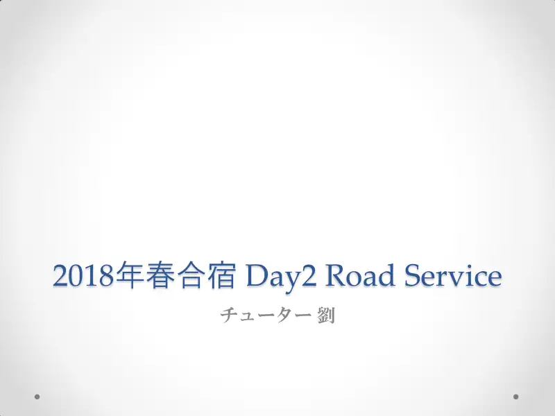
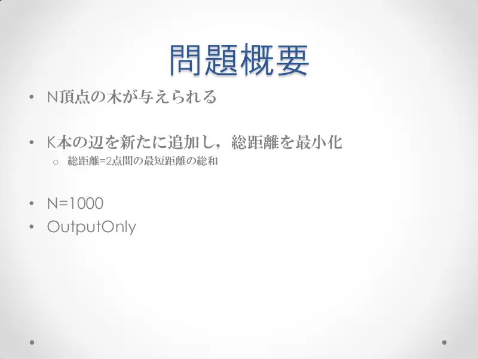
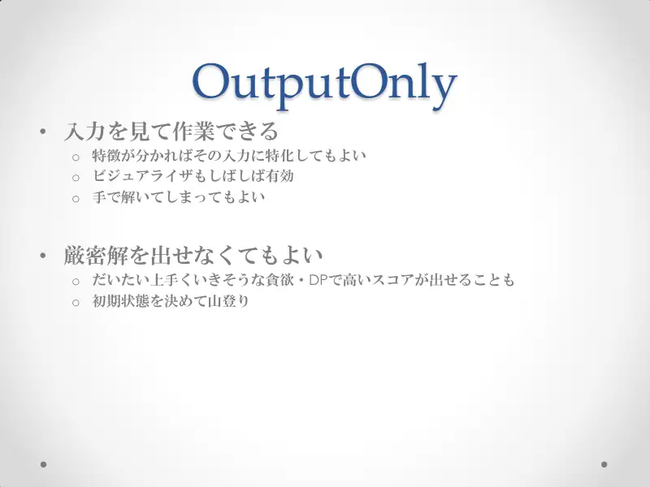
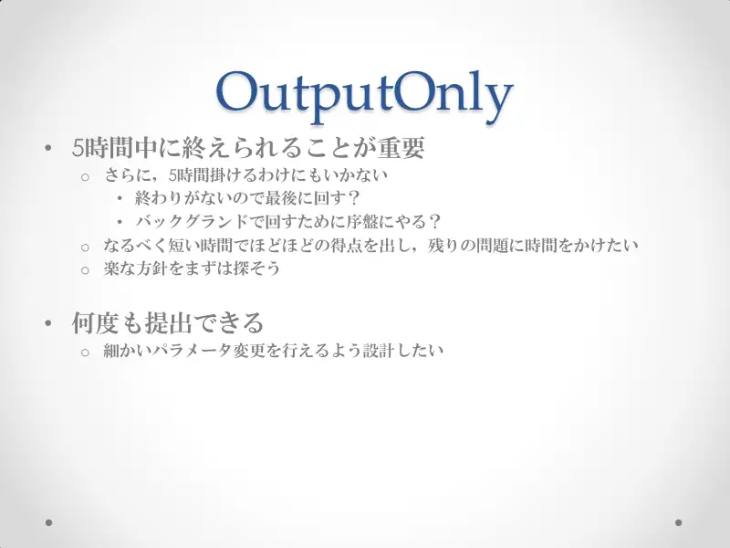
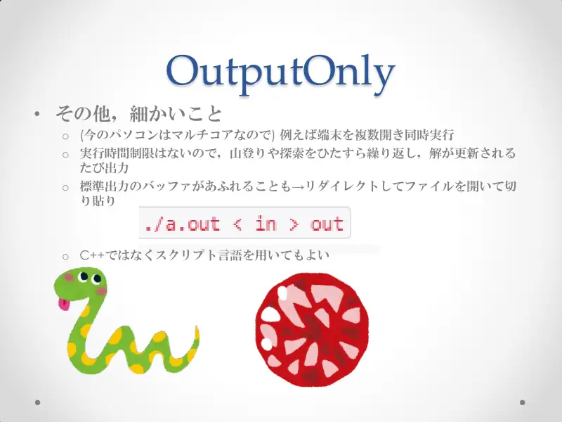
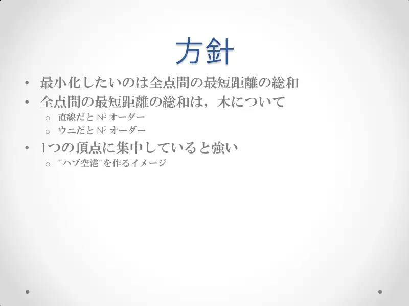
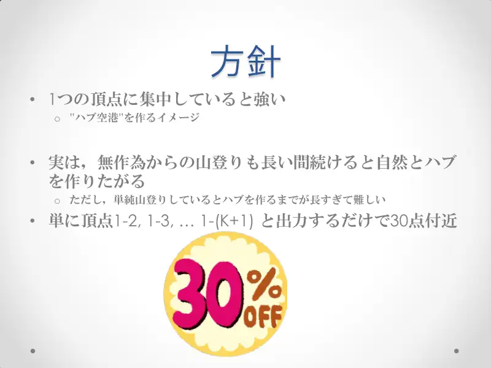
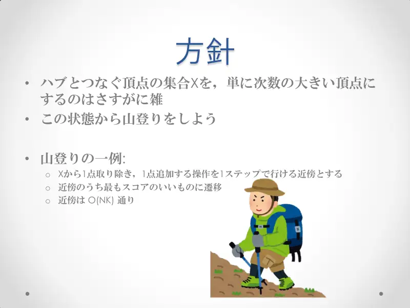
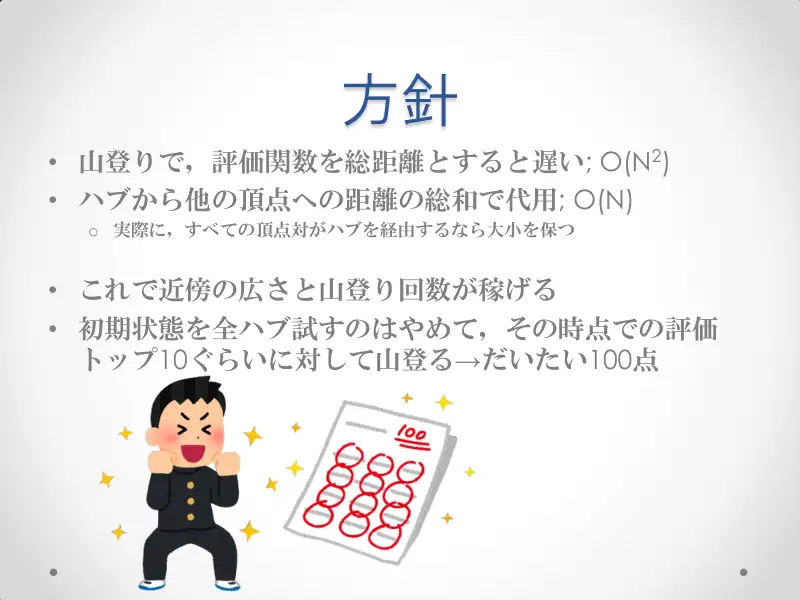
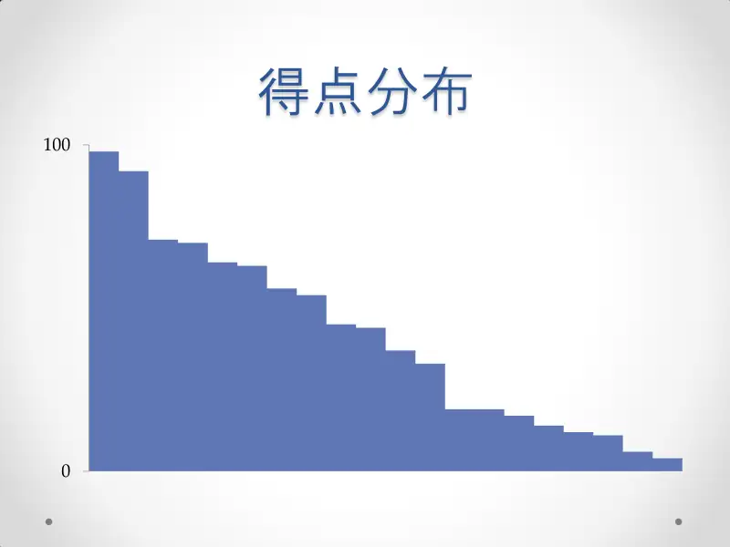

Analiza rješenja · JOI Spring Camp 2018 · Dan 2
Cestovna služba
O ovom članku
Tekst je prijevod službene japanske prezentacije rješenja, preoblikovan u članak. Slajdovi su ugrađeni kao slike; natpis pod svakim slajdom je prijevod teksta na njemu. Dijelovi označeni kao trenerska napomena nisu u izvornoj prezentaciji — dodani su da popune korake koje slajdovi preskaču ili samo skiciraju.
Slajdovi
Zadatak
izvorni slajdovi 1–3
-

1Naslov; tutor Liu. -

2Stablo, dodaj $K$ bridova, minimiziraj zbroj udaljenosti; $N=1000$; output-only. -
3Output-only!
← → tipke ili klik na sliku
Koraci algoritma
Kako pristupiti output-only zadacima
izvorni slajdovi 4–6
-

4Smiješ gledati ulaz, specijalizirati, vizualizirati, ručno rješavati; ne treba točno rješenje — greedy/DP/hill-climbing. -

5Bitno je stati u 5 sati i ne potrošiti ih sve; brzo pristojni bodovi; više predaja — parametriziraj. -

6Više terminala paralelno; nema vremenskog limita — vrti pretraživanje i ispisuj poboljšanja; može i skriptni jezik.
← → tipke ili klik na sliku
Strategija
Koraci algoritma
Hub i lokalno pretraživanje
izvorni slajdovi 7–12
-

7Put $N^3$, zvijezda $N^2$ — koncentracija u jednom vrhu (hub) je jaka. -

8Nasumični hill-climbing i sam teži hubu, ali presporo; samo „1–2, 1–3, …” daje ≈30. -
9Hub fiksiran: koje vrhove spojiti? npr. najvećeg stupnja; probaj svih $N$ hubova → ≈60. -

10Skup $X$ po stupnju je grubo; hill-climbing: susjedstvo = zamijeni jedan vrh; $O(NK)$ susjeda. -

11Evaluacija zbrojem udaljenosti do huba $O(N)$ umjesto $O(N^2)$; pokreni s top-10 hubova → ≈100. -
12Alternativa: $K$ puta dodaj brid koji najviše smanjuje procjenu → ≈90 bez hill-climbinga.
← → tipke ili klik na sliku
Slajd
Statistika
izvorni slajd 13
-

13Raspodjela: 0…100.
Sažetak
- Hub + $K$ spojeva; inicijaliziraj stupnjem ili greedyjem.
- Lokalno pretraživanje zamjenom jednog vrha uz $O(N)$ zamjensku procjenu.